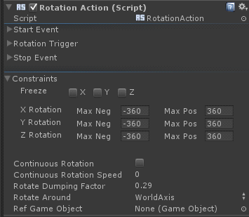

Rotation Action |
Top Previous Next |
|
The Rotation Action rotates the game object according to the trigger’s value. The Rotation Action is a Continuous Action thus you can define its start/process/stop events, as described in Continuous Actions. See additionally the section for details on the action triggers. The Constraints parameters define any movement constraints along each axis. You can configure which axis the object will rotate and what are the maximum angles in each axis. When enabled, the Continuous Rotation option continues to rotate the game object in a constant speed (specified in the Continuous Rotation Speed parameter) as long as the Rotation Trigger is fired. The Rotate Dumping Factor reduces the speed of the rotation with respect to the data retrieved from the trigger. The Rotate Around value sets the axis of the rotation. When set to GameObject, you need to additionally define a Ref Game Object as the reference game object.
|